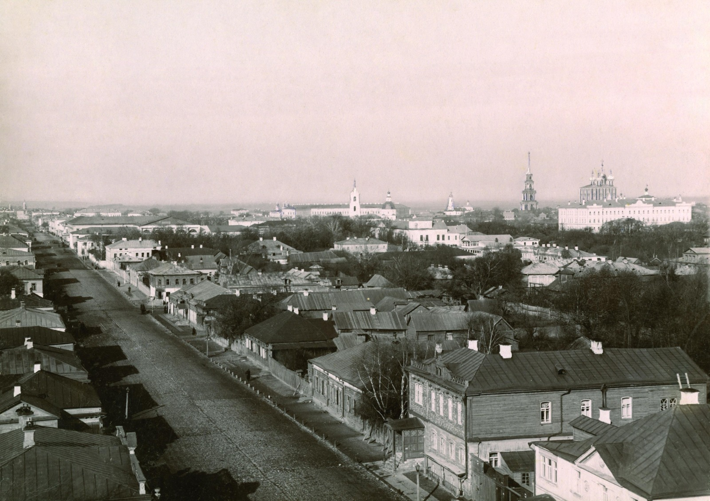
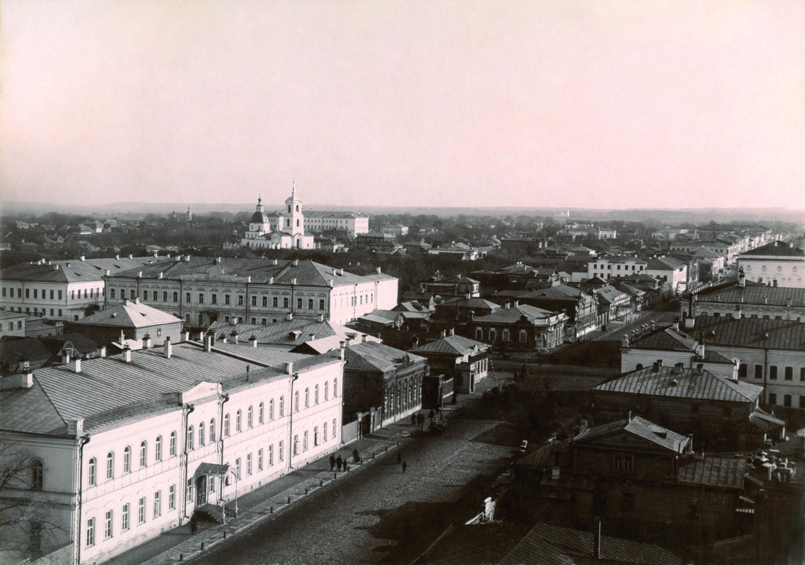
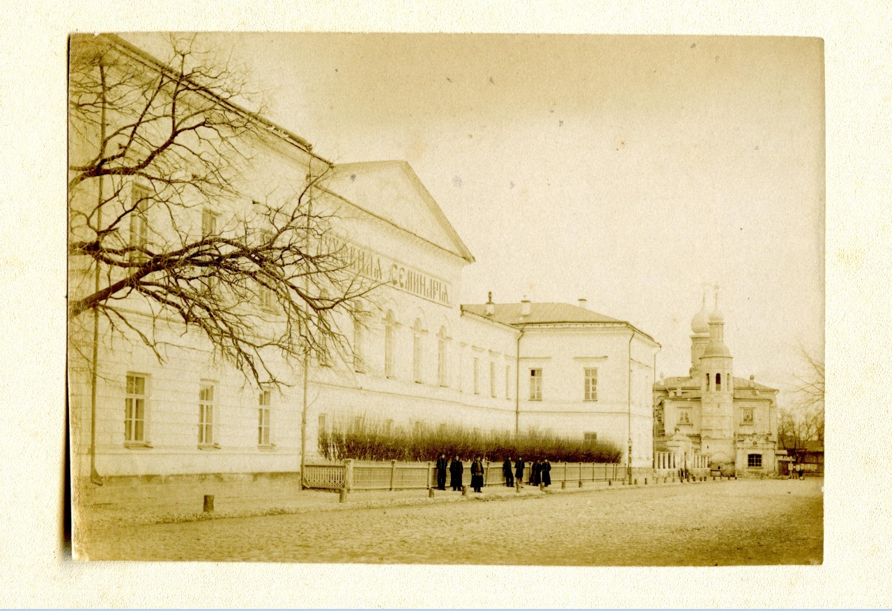
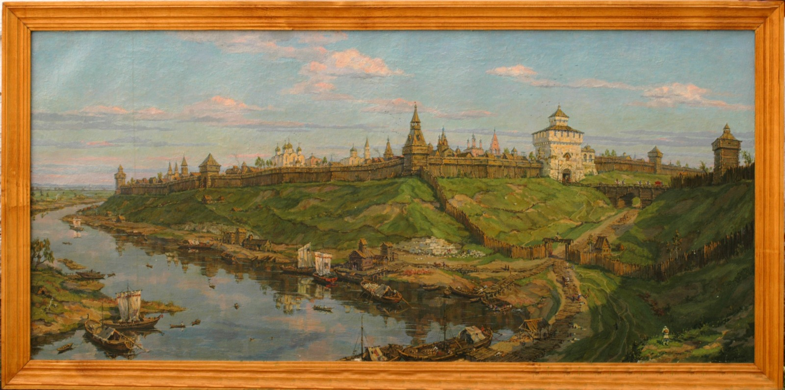

3. Рязань в XX веке
3.1.Образование Рязанской области
В 1929 г. прекратила существование Рязанская губерния. Вместо нее образовали Рязанский округ, который включили в состав Московской области. В 1937 г. была образована Рязанская область.
3.2. Население
В 1925 г. население Рязани насчитывало 33,4 тысячи человек, вместе с пригородами – около 50 тысяч. В 1930 гг. число жителей составляло уже 72 тысячи человек. По переписи населения 1959 г. в Рязани проживало 210 тысяч человек, в 1970 г. – 348 тысяч человек, а в 1979 г. уже 450 тысяч. Такой стремительный рост происходил за счет бурного промышленного развития города и переезда сюда сельского населения, прежде всего, молодежи. К концу 1990 гг. число жителей города превысило 530 тысяч.
3.3. Экономика города
В 1930–1940 гг. в городе насчитывалось пять крупных предприятий: завод Рязсельмаш, 168-й завод (ныне Государственный приборный завод), Рязанский опытный ремонтный завод, кожевенный завод и обувная фабрика «Победа Октября».

В 1949–1950 гг. в городе активно развивалась тяжелая промышленность. Строится станкостроительный завод, нефтеперегонный комбинат. В 1959 г. был открыт завод искусственного волокна. Для снабжения всех предприятий электроэнергией и теплом введена в работу Ново-Рязанская ТЭЦ. В течение 1950 гг. были открыты крупнейший в СССР завод тяжелого кузнечнопрессового оборудования (ТКПО), счетно-аналитических машин (САМ), тепловых приборов (Теплоприбор), завод литейного оборудования, электровакуумный завод и Радиозавод, завод по переработке оловянных шлаков. В 1963 г. был заложен завод «Центролит». Шло развитие и легкой промышленности. Открываются мебельная, чаеразвесочная, кондитерская и макаронная фабрики.
Вместе со строительством предприятий тяжелой промышленности в Рязани формируются новые крупные жилые районы – Приокский рабочий поселок, Соколовка, Шлаковый, Городская роща и другие.
К 1970 гг. Рязань превратилась в крупный научно-индустриальный центр. В городе действовало около 100 крупных промышленных предприятий, конструкторские бюро, научно-исследовательские институты. Высоко было значение Рязани в военной промышленности.

По-прежнему Рязань представляла собой мощный железнодорожный узел, два вокзала, Рязань-1 и Рязань-2, обеспечивали грузо- и пассажирские перевозки в южном и восточном направлениях.
В 1960–1980 гг. быстрыми темпами развивалась городская инфраструктура, социально-бытовая сфера. Строились новые мосты и дороги, школы и детские сады, больницы и поликлиники, стадионы и дворцы культуры. Стремительно увеличивалась площадь города за счет включения в городские территории близлежащих сел, появления новых крупных жилых районов – Московского, Дашково-Песочни, Канищево, Недостоево.
3.4. Образование
В 1920 гг. появляется единая система школ, которые давали начальное и семилетнее образование. В этот период в Рязани действовало 12 школ разного типа и девять техникумов, Высшая сельскохозяйственная школа и педагогический институт. Основная задача тех лет – ликвидация безграмотности. В 1923 г. в Рязани и пригороде грамотными были 29 тысяч человек.
К концу 1950 гг. во всех учебных заведениях Рязани обучалось более 36 тысяч человек. Были открыты сельскохозяйственный, медицинский имени академика И.П. Павлова и радиотехнический институты, филиал Всесоюзного заочного политехнического института.
В 1985 г. в Рязани действовало 70 средних школ, 15 техникумов и средне-специальных училищ, 40 профессионально-технических училищ. Высшее образование можно было получить в четырех гражданских институтах и двух филиалах московских вузов, а также в трех высших военных училищах и Высшей школе МВД. В 1960–1970 гг. окончательно сложилась система дошкольных детских учреждений.
3.5. Архитектура
В 1929 г. в Рязани был построен первый многоэтажный дом. К 1948 г. в Рязани имелось около пять тысяч жилых домов. Из них только два были пятиэтажными, 19 – четырехэтажными, прочие – одно- и двухэтажными. Каменных домов насчитывалось 436, смешанных (первый этаж – каменный, второй – деревянный) – около 300. Все остальные жилые здания оставались деревянными.
В первые десятилетия после Великой Отечественной войны, в период бурного промышленного развития, в Рязани, наряду с предприятиями, были построены Дворец пионеров, театр имени С.А. Есенина (сейчас – Концертный зал Областной филармонии) (ФОТО 3, 4), Рязанский дом торговли, здания Совнархоза и городской телефонной станции. В 1961 г. возводится Областной театр драмы.

В 1960–1970 гг. были открыты здания Центрального почтамта, областной библиотеки имени Горького, нескольких кинотеатров, цирка, Дома быта.

Помимо культурных объектов строится большое количество жилья, в исторической части Рязани и в новых районах разворачивается массовое жилищное строительство с преобладанием многоквартирных, пяти- и девятиэтажных домов.
3.6. Культура
В 1923 г. в Рязанском кремле размещается Государственный областной музей, который в 1968 г. был преобразован в Рязанский историко-архитектурный музей-заповедник и занял всю территорию Кремля. В 1946 г. в доме академика И.П. Павлова открылся мемориальный музей, в 1980 г. во Дворце Рюминых на ул. Свободы начал работу Областной художественный музей. Также начали работу Музей истории молодежного движения и Музей истории ВДВ.
В городе работают десятки библиотек, три театра – областной драматический, юного зрителя и кукольный, множество кинотеатров, дворцов культуры, стадионы и бассейны.
Во 2-й половине ХХ в. город украсили памятники: академику И.П. Павлову, Ф.А. Полетаеву, С.А. Есенину, Г.К. Петрову, мемориальный комплекс Победы, советско-польской дружбы в годы Великой Отечественной войны и другие.